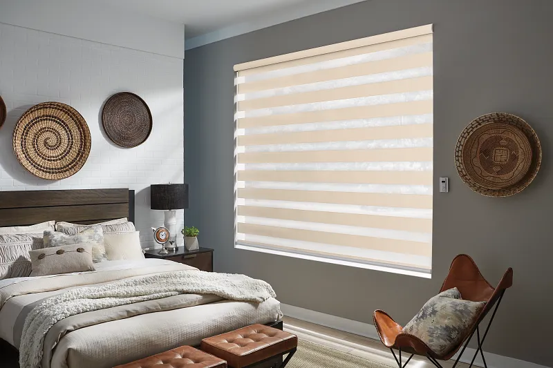
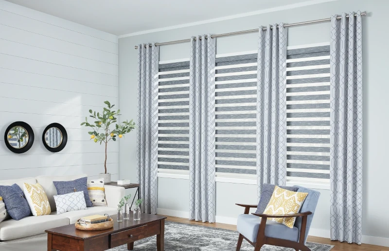
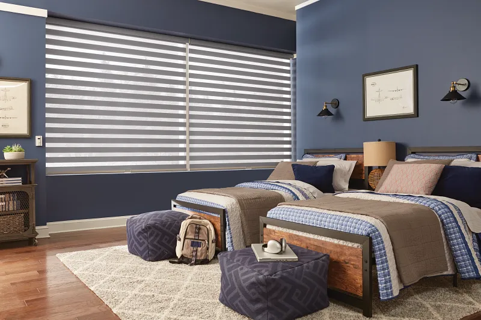
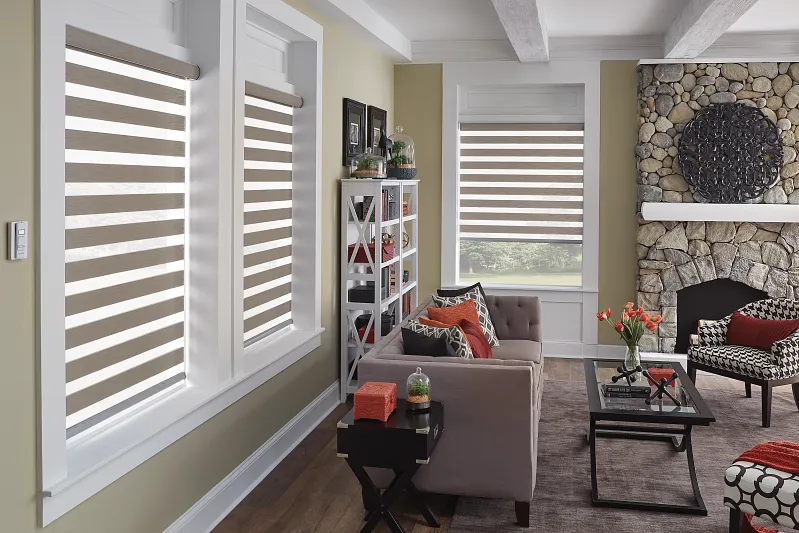
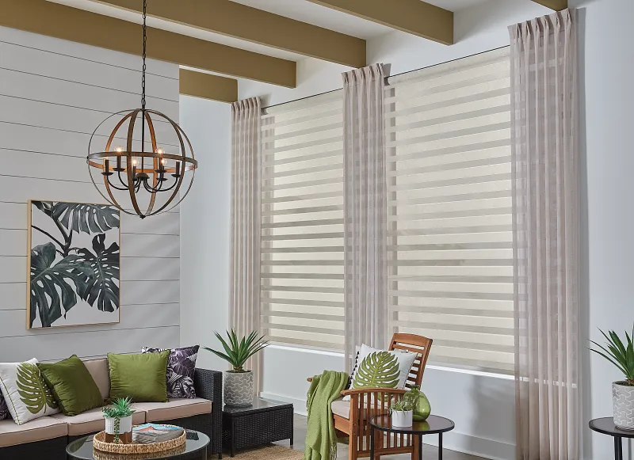
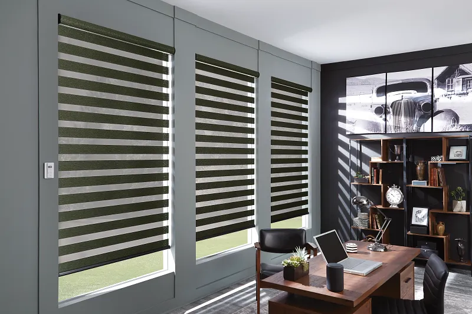
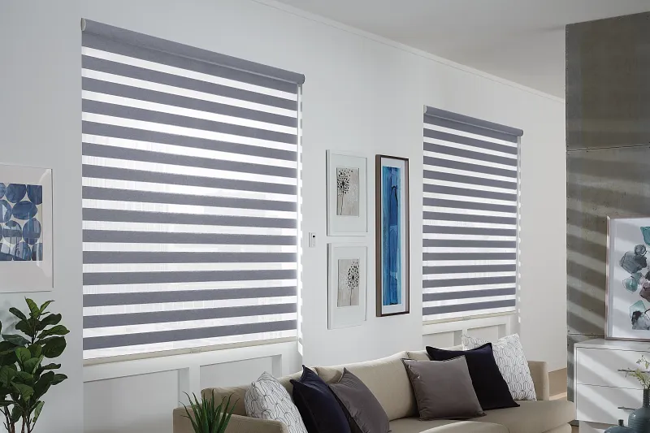

Zebra Shades: Window Coverings, Not Wildlife!
Call Brent & Edna today at 405-259-5599
for your window treatment questions.
For homeowners seeking both adaptable function and contemporary style in their window coverings, zebra shades emerge as a compelling option. Also known as layered shades or banded shades, these window treatments artfully combine alternating bands of translucent and opaque textiles into a sleek design that delivers both light control and privacy. Let's explore the world of Graber Zebra Shades and discover if they are the right choice for your home!
What are Zebra Shades?
Zebra shades incorporate alternating layers of non-transparent and sheer fabric panels, granting homeowners precise command over the amount of light entering a room. You can manage the amount of light that enters the room by simply adjusting the shade to control how the opaque and sheer fabric bands overlap. When the sheer fabric of one layer aligns with the sheer fabric of the other, light filters into the room. Conversely, adjusting the layers so the opaque bands cover the sheer ones, effectively softens the light and increases privacy.
Key Features and Benefits
- • Privacy and Light Control: the desired level of privacy and illumination by adjusting the overlap of opaque and sheer bands, or lift the shade entirely for an unobstructed view.
- • Stylish & On-Trend Fabrics: Zebra shades are available in exclusive prints, patterns, and textures, complemented by a sleek, fabric-wrapped cassette that comes standard.
- • Modern Control Options: Integrate motorization and automation to seamlessly connect with your smart-home system, enabling control via voice, phone, or tablet. Alternatively, opt for the UltraLite Cordless Lift System for effortless operation.
- • Energy Efficiency: The double-layered fabric construction provides a degree of insulation against both heat and cold.
- • Easy to Maintain: Designed for lasting performance, layered shades require only occasional light vacuuming with an upholstery attachment to maintain their beauty.
Why Choose Zebra Shades?
- • Versatile Light Control: Effortlessly adjust the alignment of the stripes to transition between gentle light filtering, making them ideal for living rooms, bedrooms, kitchens, and patio doors.
- • Privacy Management: The innovative dual-layer design ensures privacy without sacrificing natural light. Strategically position the opaque bands to soften light and deter prying eyes while still allowing diffused light to enter through the sheer bands.
- • Modern and Stylish: Zebra stripes naturally draw attention, making these shades an excellent choice for amplifying color and pattern. Their distinctive striped design can effectively highlight a room's design concept. It's worth noting that a layered shade with its bold bands of color contrasts nicely with curved design elements, which aligns with the "Unexpected Optimism" trend for 2025.
Options
- • Inside or Outside Mount: An inside mount provides a streamlined appearance that integrates seamlessly with your room's design. Conversely, an outside mount positions the shade on the room side, extending wider than the window opening. The choice between inside and outside mount primarily depends on personal aesthetic preference.
- • Corded: The corded option features a continuous-loop lift system, complete with a tensioner, to eliminate dangling cords and ensure the safety of children and pets.
- • Cordless: The UltraLite cordless lift system allows for effortless and near-silent raising and lowering of the shade with just a gentle touch.
- • Motorized: Motorized Zebra Shades can be operated via remote control or through an app on an iPad, utilizing a hub. Enjoy the convenience of controlling your shades from anywhere in the world, seamlessly integrating them into your smart home system.
Not Just Black and White
While often seen in classic dark and light neutral fabrics, zebra shades offer opportunities for customized designs through coordinating draperies. Consider installing zebra shades beneath classic draperies in fabrics that complement your room's décor, allowing for the integration of customized designs and patterns. For a cohesive and visually striking window covering, homeowners might also consider pairing a cornice with zebra shades, working with a designer to realize their vision.
Possible Drawbacks
Potential Light Gaps: Zebra shades don’t offer complete blackout. There may be enough light for some people to consider Zebra shades not the best option for them. If you are needing total blackout shades, you may want to consider our other options like Roller Shades, Cellular Shades or Roman Shades .
Easy to maintain and clean: Whatever fabric you choose, layered shades are highly durable. Your layered shade should provide you with many years of reliable service. An occasional light vacuuming with your upholstery attachment is all you need to maintain these beautiful shades.
Is it Right for You?
Zebra shades stand out as both eye-catching and practical. They offer a modern touch with their bold, striped design, and their user-friendly roller mechanism makes them easy to adjust. If you’re looking to set the tone of a room, start with a zebra shade. Some ways to contact Shaded In The Sun are at this link: Shaded In The Sun. Or just call us now at 405-259-5599 for your window treatment questions.